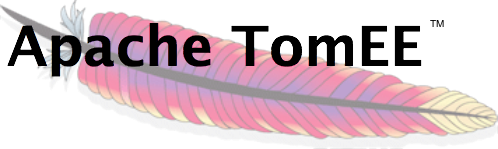

Apache TomEE, pronounced "Tommy", is an all-Apache Java EE 6 Web Profile certified stack where Tomcat is top dog. Apache TomEE is assembled from a vanilla Apache Tomcat zip file. We start with Tomcat, add our jars and zip up the rest. The result is Tomcat with added EE features - TomEE.